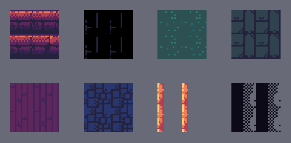
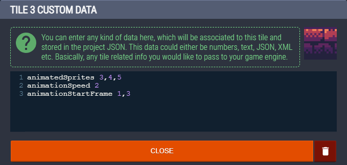

Animated Tiles
Though LDtk does not support animated tiles, the importer has some support for it through the use of tileset tile customData.

Setup
- To animate a tile, navigate to LDtk's Tilesets section.
- Click on a tile and a text dialogue will appear, where you can add text.
- Then you can put information in to tell the importer how the tile should animate.
- You type in a keyword, followed by one or more values separated by commas.
- There should only be one keyword per line.

| Keyword | Type | Default | Description | Example |
|---|---|---|---|---|
animatedSprites |
int |
(empty) | The tile ID frames to use in the animation. | animatedTiles 0,1,2,3,3,3,2,1 |
animationSpeed |
float |
1 | The animation speed. Put one number for a fixed value. Put two numbers for a random range. |
animationSpeed 2animationSpeed 1.5, 3 |
animationStartTime |
float |
0 | The initial animation time of a tile. Put one number for a fixed value. Put two numbers for a random range. |
animationStartTime 0.5animationStartTime 0, 2.5 |
animationStartFrame |
int |
0 | The initial animation frame of a tile. Put one number for a fixed value. Put two numbers for a random range. This overrides animationStartTime. |
animationStartFrame 2animationStartFrame 0, 3 |
- All keywords are optional. If one is left unused, the value will be it's default displayed in the table below.and have a default value if unused, but
animatedSpritesis required to do any animation. - The naming convention is based on Unity's TileAnimationData and AnimatedTile.
Disclaimer
- You can only use other tiles within the scope of the same tileset. No external sprites may be used.
- All aspects of animation randomness are determined in runtime and not during the import process, so every start will be different.